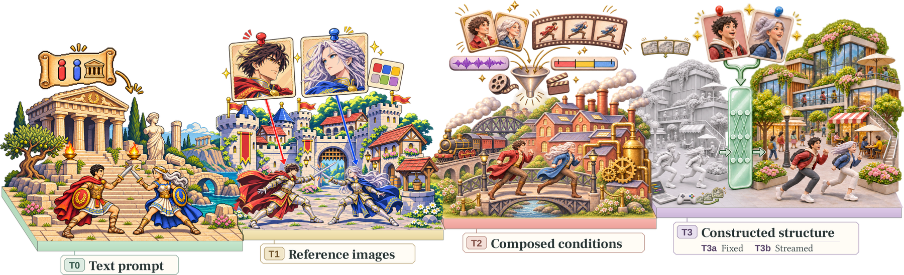

Video Models as Generative Renderers:
Foundations, Interfaces, Systems, and Beyond


Frontier video generation is shifting from open-ended content invention toward faithful conditional rendering: layout, identity, physical mechanics, and interactive state move upstream, while the video model preserves what is specified and synthesizes the visual detail left open.
The Specification Ladder Workbench
Step through Tiers 0 to 3b to watch how upstream inputs, the 2×4 factor precision contract, visual memory, and failure modes transform in real time.
Tier 3a — Pre-Fixed External Structure
Geometry + Appearance Lineages Converge2×4 Factor Precision Contract
Running Example · Two Fighters in a Courtyard (0:04 Knockdown)
Optional · View full printed paper schematics (Figure 1 Teaser & Figure 4 Ladder)

Causality (T3a vs. T3b) Is Orthogonal to Real-Time Speed
Are there real-time / fast T3a renderers? Yes — inference speed is a deployment optimization (distillation, serving), whereas T3a vs. T3b is defined strictly by whether upstream structure is pre-fixed or causally updated mid-generation.
before sampling
T3a · Clip-Level Quality Renderers
23 systemsFull-sequence bidirectional attention (20–50 steps) over pre-authored clay, G-buffers, or Blender/Three.js drafts.
T3a · Fast Distilled / Streaming Variants
3 systemsFast few-step clip rendering (e.g., 8-step distillation) remains T3a when structure is fixed up front; systems below ship a primary T3a clip model plus a secondary fast/causal variant.
evolving state s(t)
T3b · Sub-Real-Time Causal & Stateful Turns
10 systemsStrictly causal or multi-turn stateful execution (cannot peek at future states), even when throughput is ~1 FPS or several seconds per chunk.
T3b · Real-Time Interactive Renderers
14 systemsFew-step distilled causal chunk/frame renderers driven live by game engines, physics simulators, or agent harnesses at interactive frame rates (13–83 FPS).
Survey Roadmap (Chapters 2–11)
Click any chapter node to inspect its central research question, technical bottleneck, and representative literature across the generative rendering pipeline.
System Comparison Matrix (68 Systems)
Full live comparison of 26 T3a pre-fixed renderers, 24 T3b streamed/stateful renderers, and 18 T1–T2 reference-conditioned systems — with clean formatting and explicit RT speed badges.
| System | Settled Upstream | Renderer Inputs | State Owner | Injection | Training Data | RT / Speed |
|---|
Searchable Research Library
Every cited paper in the survey, filterable by research track, publication year, and real-time capability, with one-click BibTeX copy.
Cite or Contribute
Contributions of new Tier-3 generative renderers, streaming stacks, and adherence benchmarks are warmly welcomed via Pull Request.
@article{li2026generativerenderers,
title = {Video Models as Generative Renderers: Foundations, Interfaces, Systems, and Beyond},
author = {Li, Xinye and Zhang, Liuzhou and Sun, Te and Luo, Shipeng and Lin, Lingshuai and Jin, Yijie and Lang, Zirui and Fang, Guian and others and Wu, Shu and Huang, Yan and Lam, Wai},
journal = {arXiv preprint},
year = {2026}
}
Submit a Paper or Update
Open a Pull Request on GenRender-Hub/Awesome-Generative-Renderers with a verified arXiv link, tier placement, and BibTeX entry.